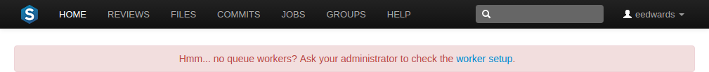

Workers
Perforce Swarm uses background processes, called workers, to respond to events in the Helix Versioning Engine. The default number of workers is 3, and each worker processes events for up to 10 minutes. When a worker terminates, a new one is spawned.
Note
Each worker maintains a connection to the Helix Versioning Engine for the duration of its lifetime. This may impact your Helix Versioning Engine management practices.
Worker status
To determine the current status of workers, visit the URL:
https://myswarm.url/queue/status
The response is formatted in JSON, and looks like this:
{"tasks":0,"futureTasks":1,"workers":3,"maxWorkers":3,"workerLifetime":"595s"}
During normal use of Swarm, the following error message appears for logged-in users when Swarm detects that no workers are running:

Worker configuration
To adjust the configuration for workers, add a configuration block to the
data/config.php file:
<?php
// this block should be a peer of 'p4'
'queue' => array(
'workers' => 3, // defaults to 3
'worker_lifetime' => 595, // defaults to 10 minutes (less 5 seconds)
'worker_task_timeout' => 1800, // defaults to 30 minutes
'worker_memory_limit' => '1G', // defaults to 1 gigabyte
),
workers specifies the number of worker processes
that should be available. The default is 3. The
cron job ensures that new worker
processes are started when necessary. If the limit is reached or exceeded,
new worker processes are not started.
worker_lifetime specifies the amount of time in
seconds that a worker process should run for. The default is 595 seconds
(10 minutes less 5 seconds). If a worker process exceeds this limit while
processing a task, it will complete the active task and then terminate.
worker_lifetime does not cause tasks to terminate
mid-processing.
worker_task_timeout specifies the maximum amount of
time in seconds that a worker process can spend processing a single task.
The default is 1800 seconds (30 minutes). This is useful for terminating
workers that might get stalled in a variety of situations.
worker_memory_limit specifies the maximum amount of
memory that a worker process is allowed to use while processing a task.
The default is 1G (1 gigabyte).
Manually start workers
To kick off a new worker process, visit the URL:
https://myswarm.url/queue/worker
When the number of workers running matches the configured limit, the requested worker process is not started.
Note
This technique does start a worker, but it lasts only for its configured lifetime. Typically, you would always want at least one worker running. See Set up a recurring task to spawn workers for details.
Manually restart workers
To restart an idle worker process, remove its lock file:
rm data/queue/workers/worker_id
A worker process that is busy processing a task will continue operation until its task is complete. Immediately afterwards, if the worker notices that its lock file is missing it exits.
If you have a recurring task to start workers, the recurring task starts a fresh worker, if necessary. See Set up a recurring task to spawn workers for details.